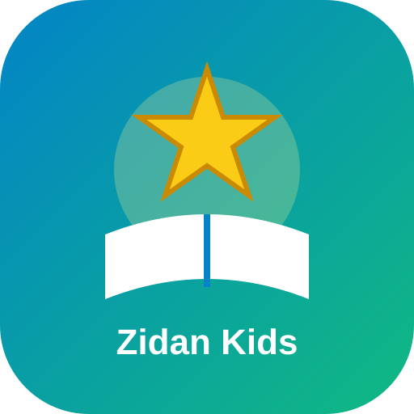

بيئة تعليمية ذكية مصممة خصيصاً لأطفال المرحلة الابتدائية؛ تجمع بين الشرح التفاعلي بالصوت والصورة، والتدريبات الممتعة، والعمل الكامل بدون إنترنت.
للحصول على مفتاح تفعيل أي صف دراسي أو الباقة الكاملة، تواصل مباشرة مع إدارة التفعيل: